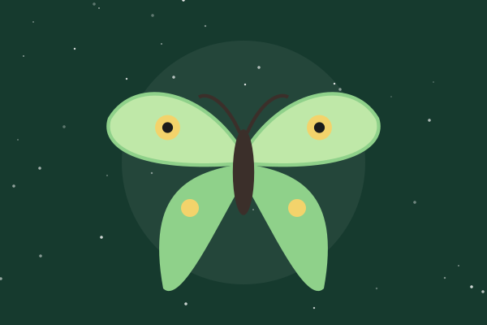

Luna Moth
A pale green giant with long trailing hindwing tails that spin in the air to confuse hunting bats.
Field notes
Adults have no working mouthparts and live about a week, so every night counts. Look for them in late May near walnut, birch and sweetgum trees.